第二章 有理数及其运算（高效培优单元测试·强化卷）
第二章 有理数及其运算（高效培优单元测试·强化卷）
（考试时间：120分钟 试卷满分：120分）
一、选择题（本大题共10小题，每小题3分，共30分）
1．若零上
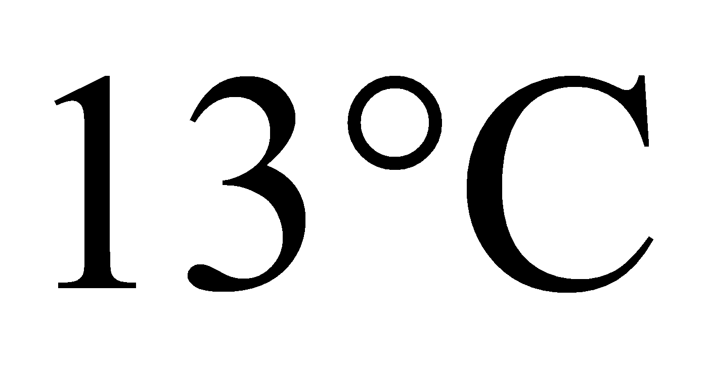
记为“ ”，则零下
”，则零下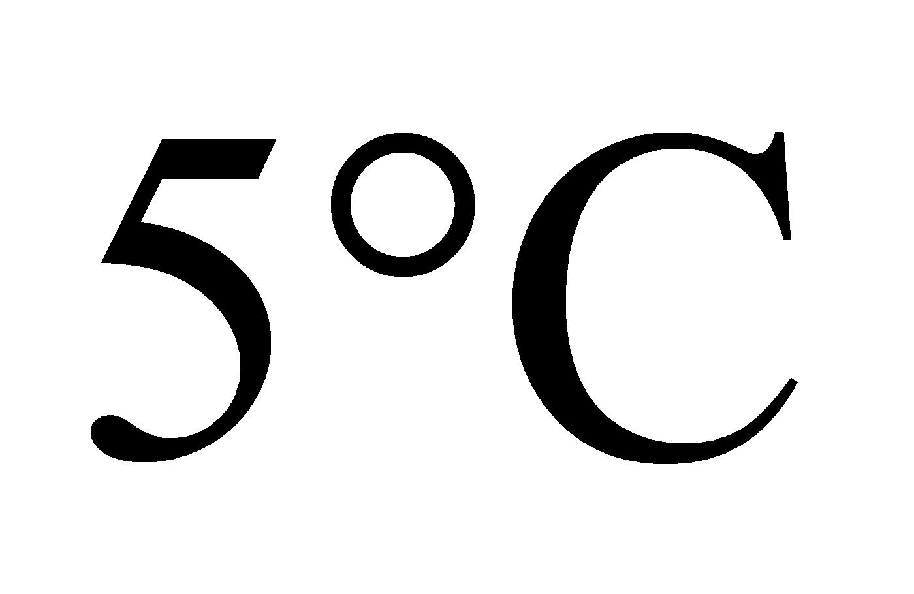
可记为（ ）A． B．
B．
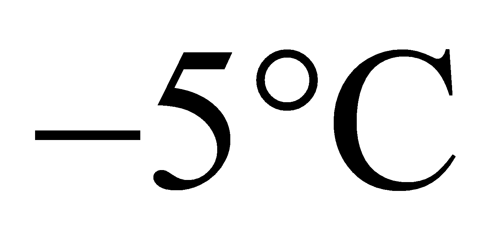
C． D．
D．
2．2024年8月8日，浙江省经济信息中心发布2024年上半年经济“成绩单”，提到：截至6月末，在册经营主体数量达
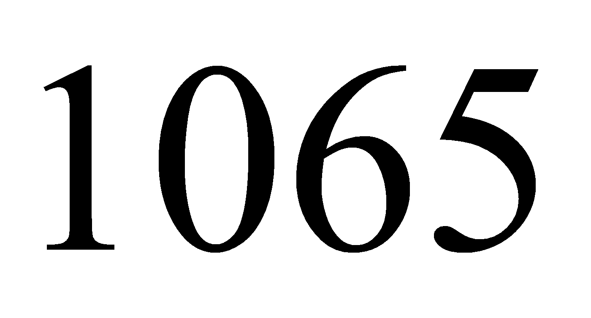
万户，同比增长 ．这里的万用科学记数法表示应为（ ）
．这里的万用科学记数法表示应为（ ）A．
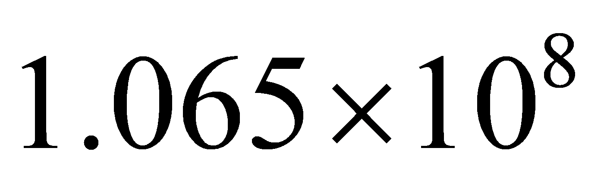
B．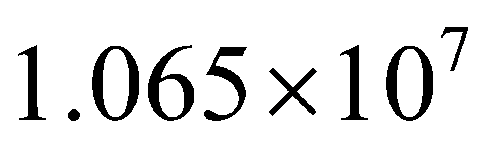
C． D．
D．
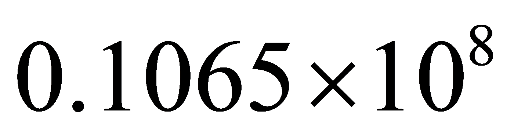
3．下列计算正确的是（ ）
A．
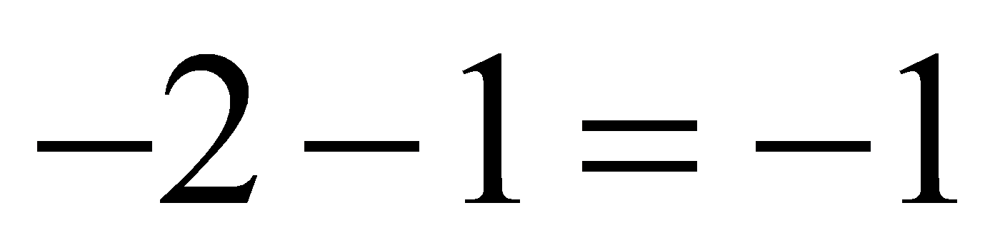
B．
C． D．
D．
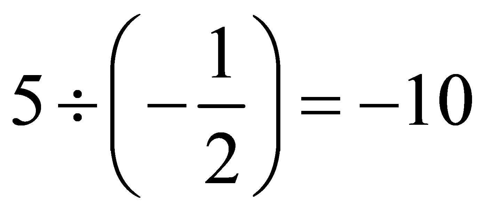
4．在7，0， ，
， ，
，
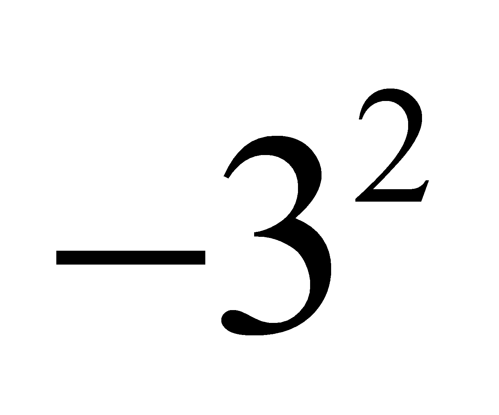
， 中，负数有（ ）个
中，负数有（ ）个A．2 B．3 C．4 D．5
5．a、b、c为非零自然数，且
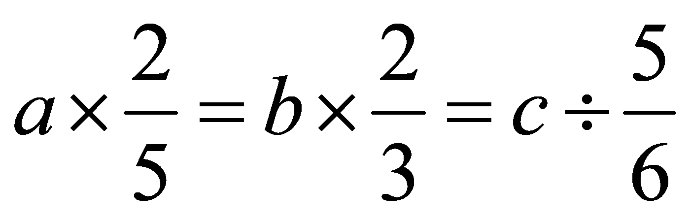
，则a、b、c中最小的数是（ ）A．a B．b C．c D．无法确定
6．设 为最小的正整数，
为最小的正整数， 为最大的负整数，
为最大的负整数， 是相反数等于本身的数，则
是相反数等于本身的数，则 的值为（ ）
的值为（ ）
A．0 B．2 C．0或2 D．
7．若 ，
， ，且
，且 ，那么
，那么 的值是（ ）
的值是（ ）
A． 或
或
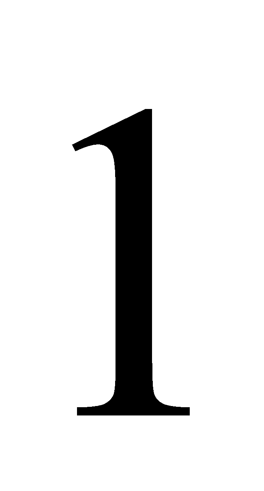
B． 或 C．或
或 C．或 D．或
D．或8．已知有理数 在数轴上的位置如图所示，则下列四个结论中正确的个数是（ ）
在数轴上的位置如图所示，则下列四个结论中正确的个数是（ ）

① ；②
；② ；③
；③ ；④
；④
A．1 B．2 C．3 D．4
9．我国古代《易经》一书中记载了一种“结绳计数”的方法．例如：一位母亲在从右到左依次排列的绳子上打结，采取满七进一的方式，用来记录孩子自出生后的天数，图1是孩子出生后30天时母亲打绳结的情况（因为： ）．图2是芽芽用相同的方式记录自己为中考立志奋斗后努力的天数，请问芽芽已为中考奋斗了（ ）天．
）．图2是芽芽用相同的方式记录自己为中考立志奋斗后努力的天数，请问芽芽已为中考奋斗了（ ）天．

A．510 B．511 C．513 D．520
10．定义一种对正整数 的“
的“ ”运算：
”运算： 当为奇数时，
当为奇数时， ；
； 当为偶数时，
当为偶数时， （其中
（其中 是使
是使 为奇数的正整数），两种运算交替进行，例如，取
为奇数的正整数），两种运算交替进行，例如，取 ，则有
，则有 ，按此规律继续计算，则第
，按此规律继续计算，则第 次“”运算的结果是（ ）
次“”运算的结果是（ ）
A． B． C．
C． D．
D．
二、填空题（本大题共6小题，每小题3分，共18分）
11．比较大小：
 （填
（填 或
或 号）
号）
12．“24点”游戏规则：从一副扑克牌抽去大小王剩下1~13这52张牌（A代表1），J、Q、K分别代表11、12、13，任意抽取4张牌称为牌组，黑色代表正数，红色代表负数，用加、减、乘、除、乘方把牌面上的数算成24，每张牌必须且只能用一次．如果抽到黑桃Q、红桃Q、梅花3、方块A，请列出一个含有乘方运算的算式，将该牌面上的数字凑成24： ．
13．数学活动课上，王老师在6张卡片上写出了6个不同的数：

如果从中任意抽取3张，使这3张卡片上的数之积最小，最小的积为 ．
14．规定一种新运算：
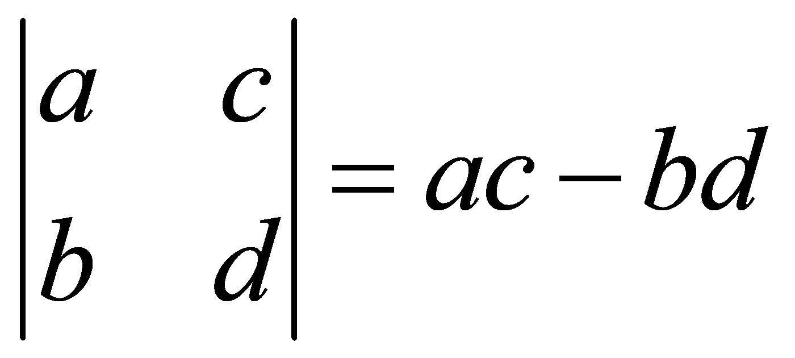
，例如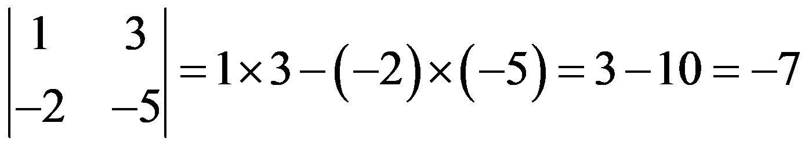
，则
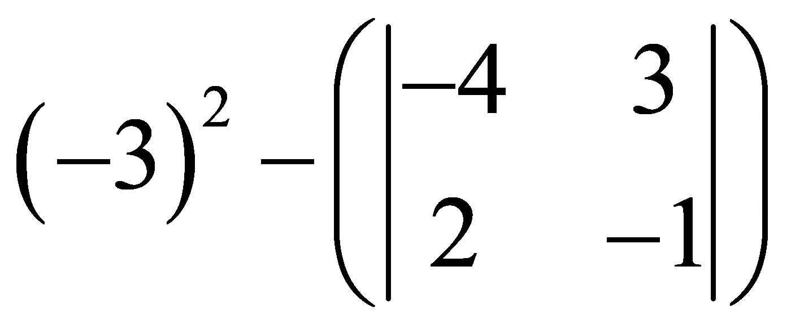
的值是 ．15．魏晋时期的数学家刘徽在其著作《九章算术注》中用不同颜色的算筹(小棍形状的记数工具)分别表示正数和负数(白色为正，黑色为负)，图1表示的是
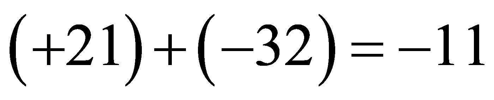
的计算过程，则图2所表示的等式是 ；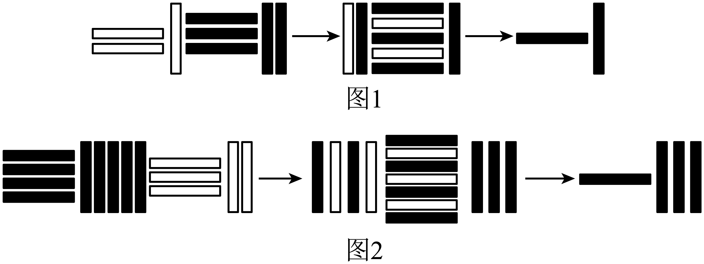
16．数轴是一个非常重要的数学工具，它是“数形结合”的基础．小超在草稿纸上画了一条数轴，并剪下包含线段 一段纸条（点
一段纸条（点 ，
， 表示的数分别为
表示的数分别为 ，），然后把这个纸条按如图方式折叠，在重叠部分某处剪一刀得到三条线段，若这三条线段的长度之比为
，），然后把这个纸条按如图方式折叠，在重叠部分某处剪一刀得到三条线段，若这三条线段的长度之比为 ，那么折痕处对应的点所表示的数是 ．
，那么折痕处对应的点所表示的数是 ．

三、解答题（第17，18，19，20题，每题6分；第21，22，23题，每题8分；第24，25题，每题12分；共9小题，共72分）
17．计算：
(1) ；
；
(2) ．
．
18．用合适的方法进行简便运算：
(1)
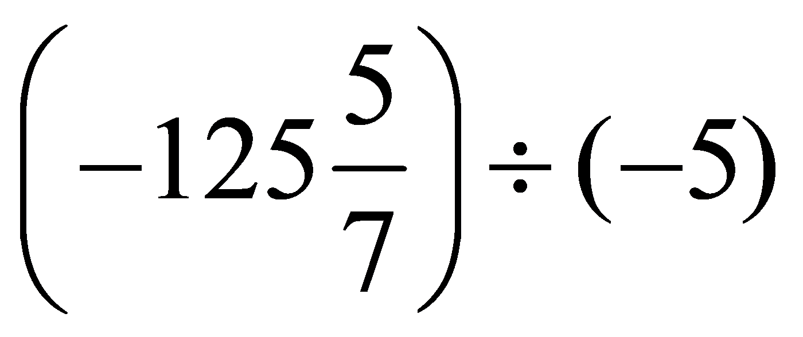
；(2)
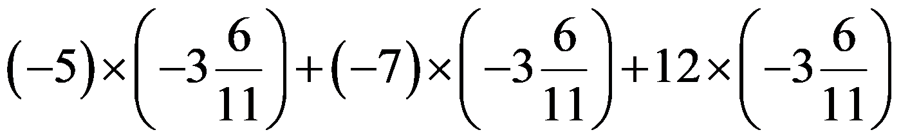
；(3)
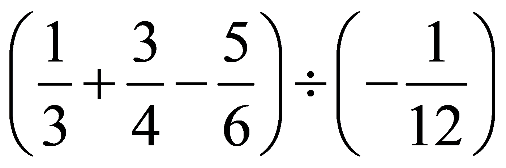
．19．计算：
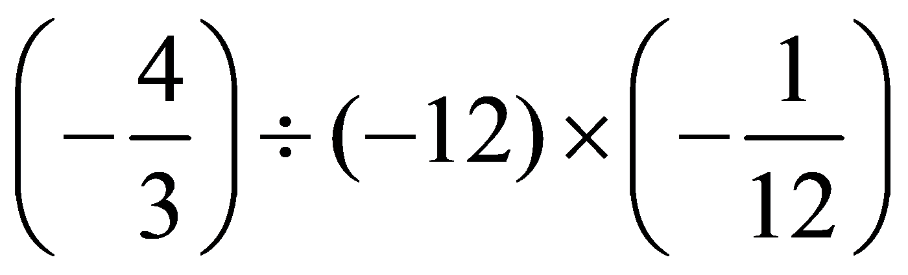
解：原式
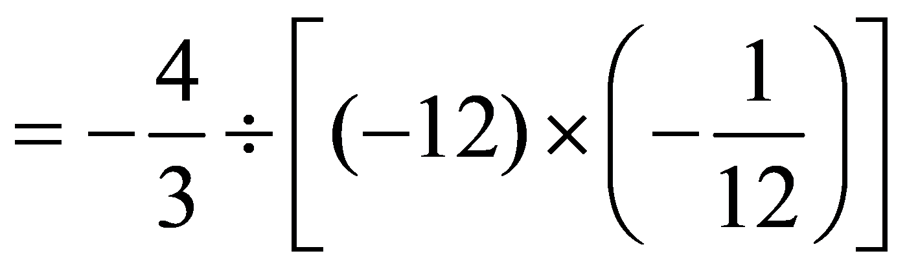
……① ……②
……②
 ……③
……③
(1)上述解法有错误，错在哪一步？答：_________（填序号）；
错误的原因是___________________．
(2)请写出这个计算题正确的计算过程．
20．已知下列有理数：
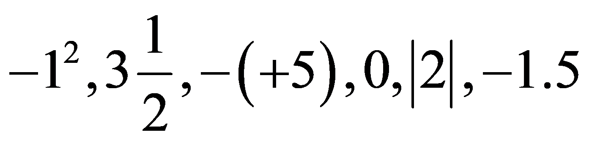
．(1)这些有理数中，整数有____个，负数有_____个，
(2)请补充完整数轴，并把上述各数所表示的点画在数轴上，再按从小到大的顺序用“”连接起来．

21．用“*”定义一种新运算：对于任何有理数 和，规定
和，规定 ，
，
如 ．
．
(1)求 的值为；
的值为；
(2)求 的值．
的值．
22．某自行车厂要生产一批相同型号的自行车，计划每天生产220辆，但由于各种原因，实际每天的生产量与计划量相比会有所差异．下表是工人在某周的生产情况：
（超过220辆记为正，不足220辆记为负）
星期 | 一 | 二 | 三 | 四 | 五 | 六 | 日 |
增减（辆） |
|
|
|
|
|
|
|


(1)生产量最多的一天比生产量最少的一天多生产了__________辆；
(2)根据记录可知，该周共生产了多少辆自行车？
(3)该厂实行计件工资制，每生产一辆得10元．若某天超过了计划生产的220辆，则当天再奖赏100元，若某天没有达到计划生产量，则当天扣除200元，求工人该周的工资总额．
23．数学课上，老师用，， ，
， 四张圆形卡片分别代表一种运算，并依据这四张圆形卡片设计了数学游戏，学生可以将卡片，，，的顺序重新排序，进行一次列式计算．例如，若按
四张圆形卡片分别代表一种运算，并依据这四张圆形卡片设计了数学游戏，学生可以将卡片，，，的顺序重新排序，进行一次列式计算．例如，若按
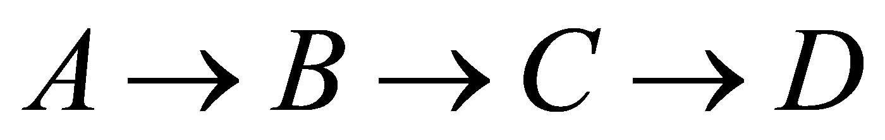
的顺序进行运算，则可列算式为 ．当卡片或排在第一张时，可以选择任意一个有理数进行卡片或的运算，然后再将剩余卡片继续运算．例如，若选择，并按
．当卡片或排在第一张时，可以选择任意一个有理数进行卡片或的运算，然后再将剩余卡片继续运算．例如，若选择，并按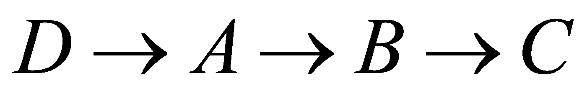
的顺序进行运算，则可列算式为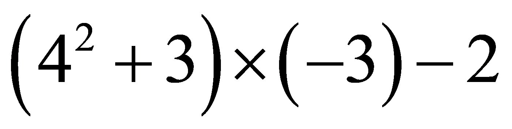
．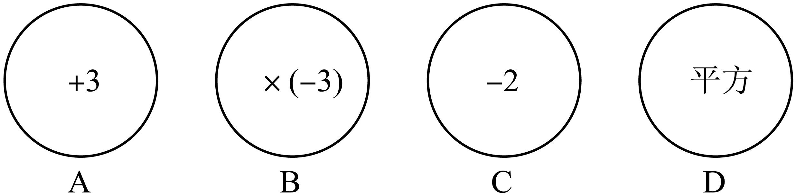
(1)算式的结果为______，算式的结果为______；
(2)若甲同学选择了
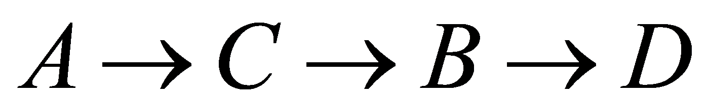
的运算顺序，求甲同学列式计算的结果；(3)乙同学选了，并按
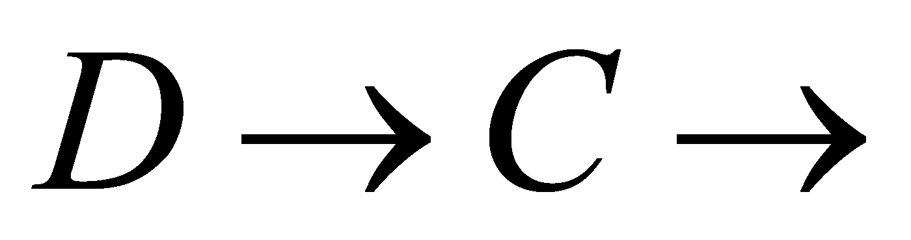
（______）→（______）的顺序运算，若乙同学列式计算的结果刚好为 ，求乙同学选择的运算顺序．
，求乙同学选择的运算顺序．24．在解决数学问题的过程中，我们常用到“分类讨论”的数学思想，下面是运用分类讨论的数学思想解决问题的过程，请仔细阅读，并解答问题、
【提出问题】若a与b的乘积不等于0，求 的值．请补充以下解答过程：
的值．请补充以下解答过程：
【解决问题】
（1）①a，b均是正数时， ；
；
②当a，b均是负数时， ；
③当a，b是一正一负时， ；
【探究拓展】
（2）已知a，b，c是有理数，当a，b，c三数的乘积小于0时，求 的值；
的值；
（3）已知a，b，c是有理数， ，且
，且 ，求
，求 的值．
的值．
25．综合与实践：
【背景知识】
有理数和分别对应数轴上的点和点，定义 为数a、b的中点数，定义
为数a、b的中点数，定义 为点A、B之间的距离，其中
为点A、B之间的距离，其中 表示数a、b的差的绝对值．
表示数a、b的差的绝对值．
例如：如图1所示，有理数−1和3分别对应数轴上的点P和点 ，数−1和3的中点数是
，数−1和3的中点数是
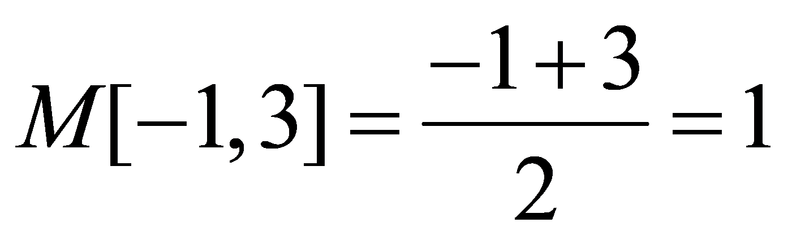
，点P，Q之间的距离是 ．
．
请阅读以上材料，完成下列问题：
【问题情境】
如图2所示，在数轴上原点 表示数是0，点在原点的左侧，所表示的数是，点到原点距离为2；点在原点的右侧，所表示的数是，点到点距离为6，点
表示数是0，点在原点的左侧，所表示的数是，点到原点距离为2；点在原点的右侧，所表示的数是，点到点距离为6，点 为数轴上任意点，所表示的数是
为数轴上任意点，所表示的数是 ．
．

【解决问题】
(1) ______，______；
______，______；
(2)
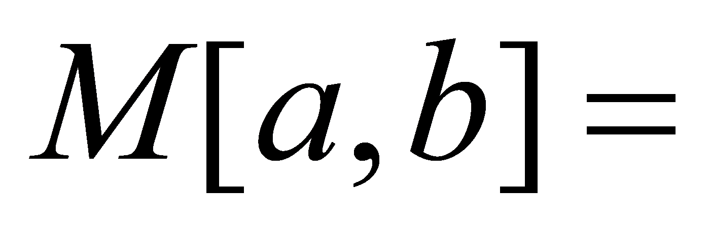
______， ______；
______；(3)已知 ，求
，求
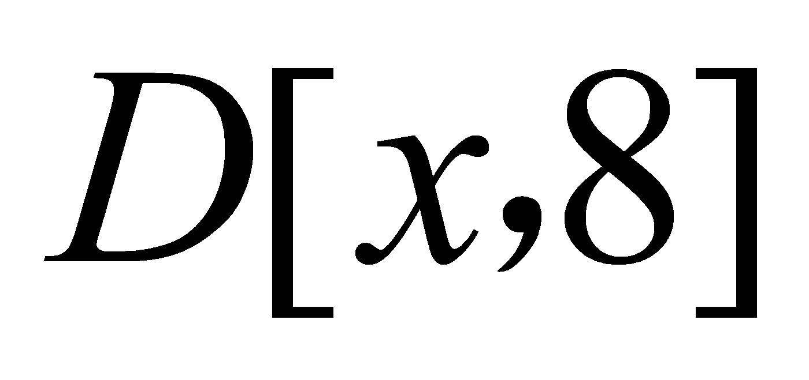
的值；(4)对于数轴上的三点，又给出如下定义：若当其中一个点与其他两个点的距离恰好满足2倍关系时，则称该点是其他两个点的“2倍点”．现在，点、点分别以每秒4个单位长度和每秒1个单位长度的速度同时向右运动，同时点以每秒3个单位长度的速度从表示数5的点向左运动．设出发 秒后，点恰好是点A，B的“2倍点”．请直接写出此时的值是______．
秒后，点恰好是点A，B的“2倍点”．请直接写出此时的值是______．